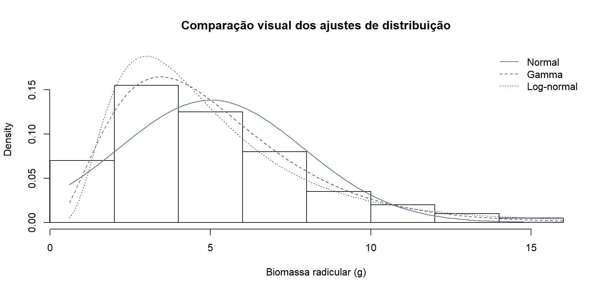
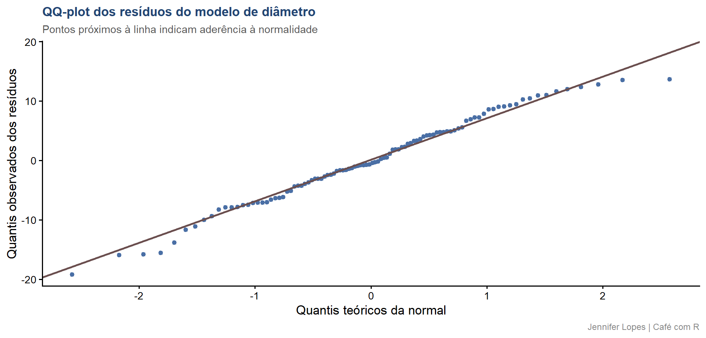

Aula 55. Ajustar distribuiçãoe com fitdistrplus
Comparação formal por AIC e a verificação correta de normalidade dos resíduos
Acompanhe o Café com R
Que cada gole desperte uma nova ideia.
Que cada script abra uma nova conversa.
Que o Café com R se torne um ponto de encontro nosso.
SITE OFICIAL > https://jenniferlopes.github.io/meu_site/
Objetivos da aula
- Ajustar formalmente candidatos de distribuição a um conjunto de dados com
fitdistrplus - Comparar candidatos por AIC e por diagnóstico visual
- Entender por que a normalidade a ser verificada é a dos resíduos de um modelo, não a da variável bruta
- Aplicar e comparar o teste de Shapiro-Wilk e o teste de Anderson-Darling
Bloco 1
Ajuste de Distribuição com fitdistrplus
Por que ajustar formalmente, não só olhar o histograma
Contexto: a biomassa radicular de mudas de eucalipto, em gramas, precisa ter sua distribuição identificada antes de compor um modelo estatístico mais amplo.
Olhar um histograma e decidir visualmente “parece uma gamma” é um ponto de partida razoável, mas não substitui a comparação formal entre candidatos, que quantifica qual distribuição se ajusta melhor aos dados observados.
O pacote fitdistrplus ajusta um ou mais candidatos de distribuição por máxima verossimilhança, e fornece medidas objetivas de comparação.
Comparação por AIC, conceito
\[AIC = 2k - 2\ln(\hat{L})\]
\(k\) é o número de parâmetros da distribuição, \(\hat{L}\) a verossimilhança maximizada do ajuste.
O AIC penaliza distribuições com mais parâmetros, favorecendo o modelo mais simples entre os que explicam os dados igualmente bem.
Entre candidatos ajustados ao mesmo conjunto de dados, o menor valor de AIC indica o melhor ajuste relativo, não um ajuste absoluto perfeito.
Código: fitdist() para três candidatos
Output: comparação e AIC
# A tibble: 3 × 2
distribuicao aic
<chr> <dbl>
1 Gamma 472.
2 Log-normal 473.
3 Normal 499.- A distribuição Gamma apresenta o menor AIC entre os três candidatos, indicando o melhor ajuste relativo aos dados de biomassa radicular, coerente com a natureza estritamente positiva e assimétrica dessa variável.
Gráfico: comparação visual dos ajustes

Escolhendo o melhor ajuste, interpretação
A comparação por AIC deve sempre ser acompanhada de inspeção visual, o gráfico de densidade sobreposto ao histograma mostra se o ajuste com menor AIC também captura razoavelmente a forma geral dos dados.
Quando dois candidatos têm AIC muito próximos, a escolha pode considerar também a facilidade de interpretação dos parâmetros e o uso pretendido para o modelo ajustado.
Bloco 2
Verificação de Normalidade dos Resíduos
Conceito fundamental, por que checar os resíduos
- Contexto: um modelo relaciona o diâmetro do caule das mudas à idade em meses. A suposição de normalidade exigida pela inferência sobre esse modelo recai sobre os resíduos, a diferença entre valor observado e valor previsto, não sobre a variável diâmetro em si.
Important
Atenção: testar a normalidade da variável resposta bruta, antes de ajustar o modelo, é um erro conceitual frequente. Uma variável resposta pode não ser normal, e ainda assim os resíduos do modelo que a explica podem ser normais, e vice-versa.
Teste de Shapiro-Wilk, conceito e limite
O teste de Shapiro-Wilk compara a distribuição empírica dos resíduos a uma distribuição normal teórica, sendo um dos testes mais utilizados para amostras pequenas e moderadas.
É sensível a desvios em qualquer parte da distribuição, mas seu poder cresce com o tamanho da amostra, a ponto de detectar desvios de normalidade tão pequenos que são irrelevantes na prática, quando \(n\) é muito grande.
Teste de Anderson-Darling, conceito e diferença
O teste de Anderson-Darling também compara a distribuição empírica a uma normal teórica, mas atribui peso maior aos desvios nas caudas da distribuição, em vez de peso uniforme ao longo de todo o domínio.
É particularmente útil quando a preocupação principal é a presença de valores extremos que se desviam da normalidade, mesmo que o corpo central da distribuição pareça razoavelmente normal.
Código: ajuste do modelo e os dois testes
modelo_diametro <- lm(diametro_mm ~ idade_meses, data = mudas_eucalipto)
residuos <- residuals(modelo_diametro)
tibble(
shapiro_estatistica = shapiro.test(residuos)$statistic,
shapiro_p = shapiro.test(residuos)$p.value,
anderson_estatistica = ad.test(residuos)$statistic,
anderson_p = ad.test(residuos)$p.value)Output: comparação e interpretação
# A tibble: 1 × 4
shapiro_estatistica shapiro_p anderson_estatistica anderson_p
<dbl> <dbl> <dbl> <dbl>
1 0.985 0.327 0.280 0.639- Nenhum dos dois testes indica evidência contra a normalidade dos resíduos, resultado consistente entre os dois critérios, um deles mais sensível ao corpo da distribuição, outro mais sensível às caudas.
Código: QQ-plot dos resíduos
Gráfico: QQ-plot e leitura

- Os pontos acompanham a linha de referência ao longo de praticamente todo o intervalo, sem desvio sistemático nas extremidades, confirmando visualmente o resultado dos dois testes formais.
Bloco 3
Síntese
Quando usar fitdistrplus x teste de normalidade direto
| Situação | Ferramenta indicada |
|---|---|
| Identificar qual distribuição descreve uma variável, sem suposição prévia | fitdistrplus, comparação por AIC |
| Verificar se um modelo já ajustado atende à suposição de normalidade dos resíduos | Shapiro-Wilk, Anderson-Darling, QQ-plot |
| Variável claramente restrita, positiva, ou limitada entre 0 e 1 | fitdistrplus, testando candidatos compatíveis com o domínio |
Erro comum 1, escolher a distribuição só pelo histograma
- Decidir visualmente qual distribuição parece adequada, sem comparação formal por AIC, pode levar à escolha de um modelo pior ajustado do que um candidato alternativo não considerado.
Erro comum 2, aplicar Shapiro-Wilk na variável bruta em vez dos resíduos
- Testar a normalidade da variável resposta antes de ajustar o modelo, e descartar o modelo por esse motivo, ignora que a suposição relevante recai sobre os resíduos, não sobre a variável em si.
Erro comum 3, confiar demais no Shapiro-Wilk com amostra muito grande
Com milhares de observações, o teste de Shapiro-Wilk tende a rejeitar a normalidade mesmo diante de desvios pequenos e irrelevantes na prática, um reflexo do alto poder do teste, não necessariamente de um problema real no modelo.
Nessas situações, o exame visual do QQ-plot é tão ou mais informativo que o valor de p isolado.
Resumo: ajuste de distribuição e normalidade
| Ferramenta | Função no R | Compara |
|---|---|---|
| fitdistrplus | fitdist(), denscomp() |
Candidatos de distribuição, por AIC |
| Shapiro-Wilk | shapiro.test() |
Resíduos x normal, sensível ao corpo |
| Anderson-Darling | ad.test() |
Resíduos x normal, sensível às caudas |
| QQ-plot | stat_qq() |
Quantis observados x quantis teóricos |
Obrigada!

Continue praticando e explorando.
Esta aula é parte do projeto Café com R. É open source. Use, compartilhe e adapte.
Siga o Café com R
Que cada gole desperte uma nova ideia.
Que cada script abra uma nova conversa.
Que o Café com R se torne um ponto de encontro nosso.
SITE OFICIAL > https://jenniferlopes.github.io/meu_site/

Jennifer Lopes | Café com R